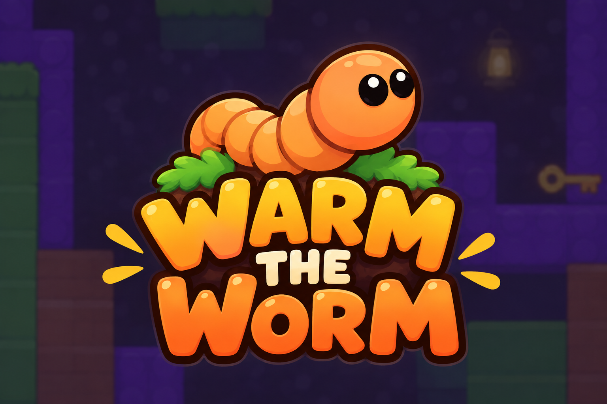

Warm the Worm
A tile-based platformer you can build on: make levels and art in the browser, and share them peer to peer.
▶ Play the Garden level pack
A tile-based platformer you can build on: make levels and art in the browser, and share them peer to peer.
▶ Play the Garden level pack